25 Retinal encoding
Suggestions of all kinds for this book draft are welcome — whether it’s fixing small errors, raising bigger questions, or offering new perspectives. Please share comments through GitHub Issues. To make feedback easier to address, please point to the section you have in mind — by section number or a short snippet of text.
25.1 Overview
Chapter 24 described the first bottleneck on spatial resolution: optical blur introduced by the eye’s physiological optics. This chapter describes the second bottleneck: spatial sampling by the photoreceptor mosaic.
The retina, a thin layer of neural tissue lining the back of the eye, contains a set of highly specialized neurons that convert the optical image formed by the physiological optics into neural signals. This process, called transduction, is performed by the photoreceptors. The signals from the photoreceptors, in the form of synaptic transmitter release, are processed by multiple distinct networks of retinal neurons. The output of these networks is sent to the brain on the retinal ganglion cell (RGC) axons. The bundle of RGC axons exit the retina through a small hole and form the optic nerve.
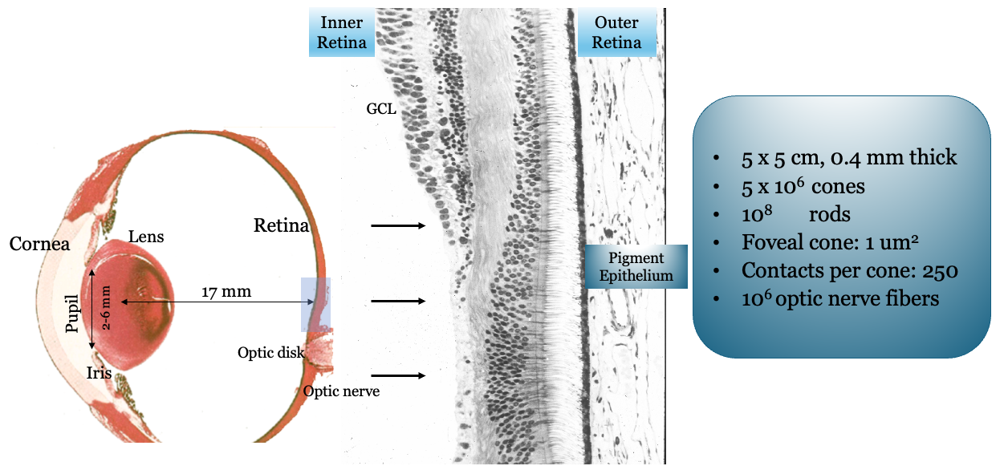
The retina is a feed-forward system; there is virtually no direct neural feedback from the brain. This simplifies our work, allowing us to study the retina’s input-output relationship without accounting for top-down signals—a luxury we rarely have when studying other parts of the brain.
25.2 Retina
The optical blur described in Chapter 24 only limits vision to the extent that the retina samples the resulting image. A 5-micron optical spread has very different implications if it is sampled every 2 microns versus every 10 microns. We therefore turn to the retina and the photoreceptor mosaic that samples the optical image.
The retina is approximately \(200–300\) microns thick near the posterior pole, varying from about \(100\) to \(500\) microns across the retina. Its total area is on the order of \(10–12~cm^2\). It is a laminated neural tissue comprising three nuclear layers separated by two plexiform layers. There are on the order of 80 different cell types that can be identified through their genetic expression, responses to light, and anatomical form. The retinal cells form stereotyped connections, which we call retinal circuits. We believe that there are about 20 such circuits. The circuit outputs, carried on the retinal ganglion cell axons in the optic nerve, project to a variety of locations in the brain.
The vast majority of light-driven activity is initiated in the photoreceptors (rods and cones). The rods are the dominant source under very low light levels, and the cones are the dominant source under moderate to high light levels. The typical retinal circuit is driven by activity that starts in a local region of the photoreceptors. The same basic circuit will be present throughout the retina, tiling the photoreceptor mosaic, though the absolute size of the cells and their input regions generally vary across the retina. The size of the region increases as one measures from the highly specialized central fovea into the periphery.
There is one important and interesting exception, only recently discovered. There exists a class of retinal ganglion cells that contain a light-sensitive pigment (melanopsin). These cells, called the intrinsically photosensitive RGCs (ipRGCs), absorb photons and respond to overall light level. There are not a lot of these cells, but their outputs are important for circadian rhythms and pupillary control. They may also influence other aspects of vision.
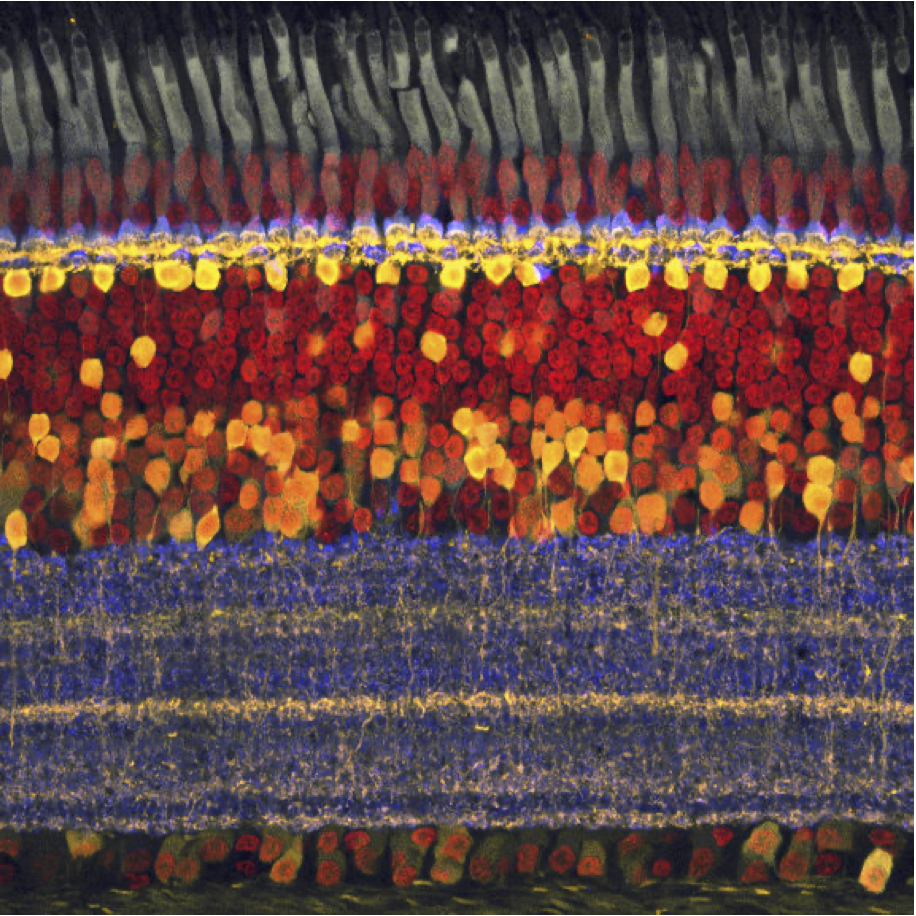
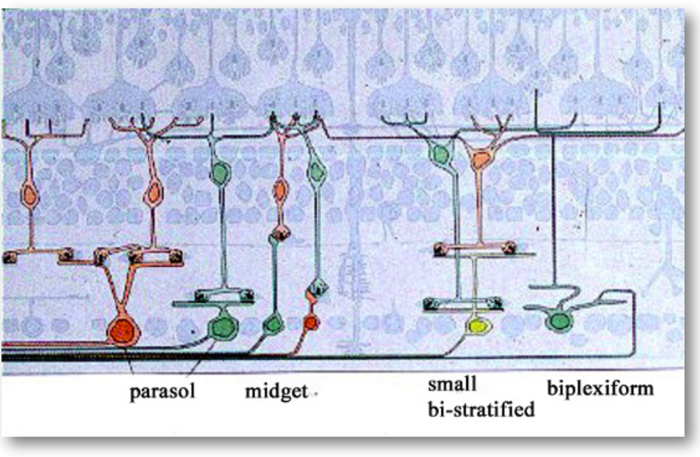

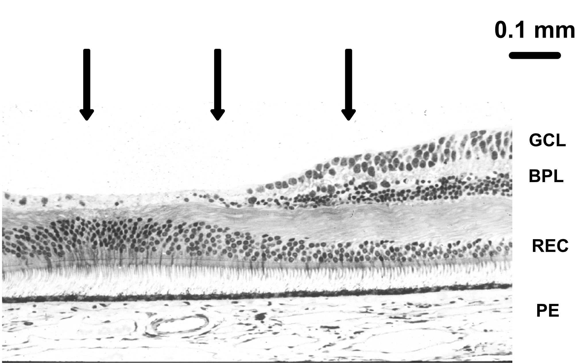
25.3 Photoreceptor types
The rod and cone photoreceptors are specialized neurons whose principal function is to convert electromagnetic radiation into a neural signal. Both types of photoreceptors accomplish this using a light-sensitive pigment (photopigment). This pigment absorbs photons and, in so doing, initiates a chain reaction of events within the cell (Stryer (1986)). These events, the transduction cascade, result in a change in the synaptic signal from the photoreceptor. The spatio-temporal pattern of changes across the photoreceptor mosaic is the signal that the nervous system interprets and the basis of our sight.
The arrows at the bottom indicate the direction of the incoming light (the lens is below). The light arrives at the photoreceptor layer, brought into focus by the physiological optics. Some of the light enters the cell through the inner-segment aperture. Because of the refractive-index contrast between the inner segment and surrounding medium, the inner segment acts as a waveguide that directs the light toward the outer segment, where it initiates the transduction cascade.
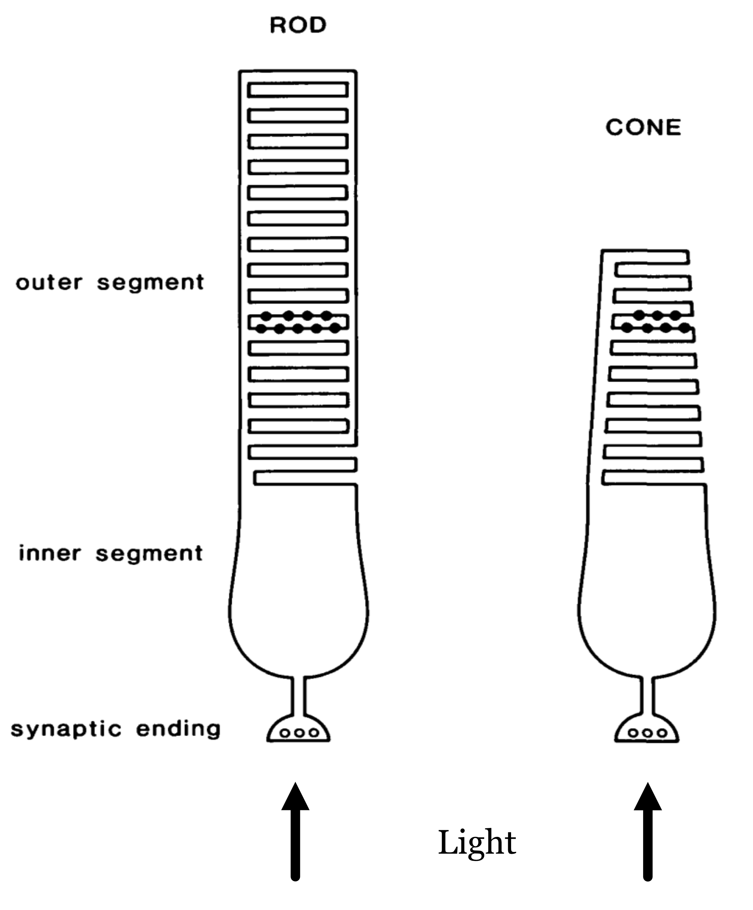
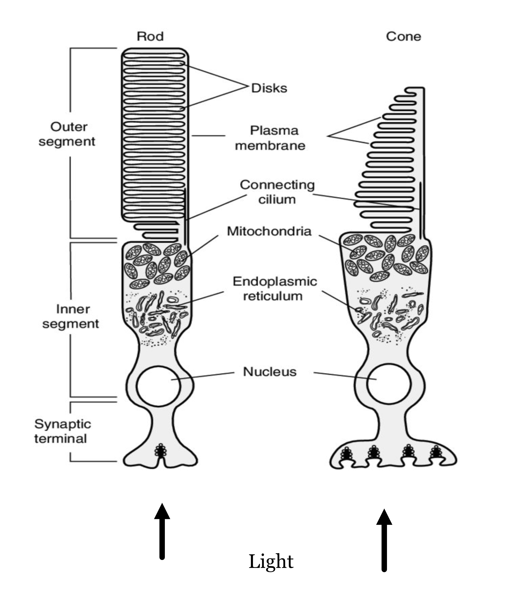
The rod and cone photoreceptors are two largely distinct systems. The rods are mainly used to provide vision under low light levels (scotopic; e.g., nighttime). There is only one type of rod photopigment, rhodopsin. For this reason the rod system provides no information to compare the different wavelengths of light incident at the retina.
The cone photoreceptors dominate vision at modest to high levels of illumination. There are three types of cones, containing three different photopigments. These photopigments absorb over a fairly broad wavelength band, but they have different peak sensitivities in the long-, middle-, and short-wavelength parts of the visible spectrum. I will cover more on this in the color section below.
The spatial resolution of the human eye depends on the aperture size and spacing of the photoreceptor inner segments, particularly for the cones. A great deal was discovered about the sampling mosaic in the 1980s and 1990s Curcio et al. (1990). Prior to that time, the nature of the cone sampling mosaic and the importance of sampling were not widely appreciated. The importance of sampling was emphasized by Yellott and colleagues, who analyzed the spatial sampling. William Miller and Joy Hirsch, at Yale, were among the first to crisply show the dense packing (Hirsch and Miller (1987)). Over small patches of the primate retina the packing is quite dense (Figure 25.4), in a spatial arrangement called a triangular (hexagonal) packing.
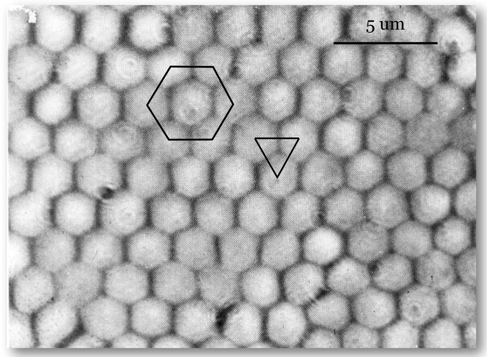
How does the spatial sampling of the cones compare to the optical PSF? One comparison we can make is for the central fovea. There the inner-segment apertures are about 1.5–2 microns in diameter. Using ISETCam we can calculate the diffraction-limited Airy disk diameter (first minimum) for a 550 nm light. For a 3 mm pupil, the f-number of the human optics is 17 mm / 3 mm ≈ 5.6. Using Equation 8.2, this is:
>> radius = airyDisk(550,5.6,'units','um','diameter',true)
radius =
7.5152This calculation shows that a tiny point in the scene -say star light- will be spread over a diameter of about 7 \(\mu\text{m}\) on the retinal surface, which corresponds to a 3 or 4 foveal cones. In natural vision, therefore, no stimulus will excite a single photoreceptor; the nervous system always receives signals from multiple cones, even if it draws the inference that the source is a single, very tiny point of light.
One reason for creating such a system that spreads the light over several cones may be to enable us to judge the wavelength information. It is likely that spreading the light across 5-10 cones will engage cones with more than one type of photopigment, and the relative excitation of the different types of cones is the signal we use to judge color. We encountered a similar principle when describing the color filter array in cameras; designers purposefully introduced some blur so that any small region of the scene would engage the R,G and B pixels (Section 19.3.2).
What is the arrangement of the different cone types in the human eye? Some data on this point emerged in the 1980s and 1990s when biologists discovered fluorescent markers that would attach to just one type of photoreceptor (Monasterio et al. (1981), Wikler and Rakic (1990)). These measurements could distinguish the L,M cones from the S-cones.
About ten years later, new estimates that could distinguish between the L- from M-cones were obtained in the living human eye. These measurements used adaptive optics coupled with knowledge about the relative wavelength selectivity of the different cone types (Roorda and Williams (1999), Hofer et al. (2005), Hofer and Williams (2014)). I explain these measurements in the Foundations of Vision, 2nd edition. When that gets written.
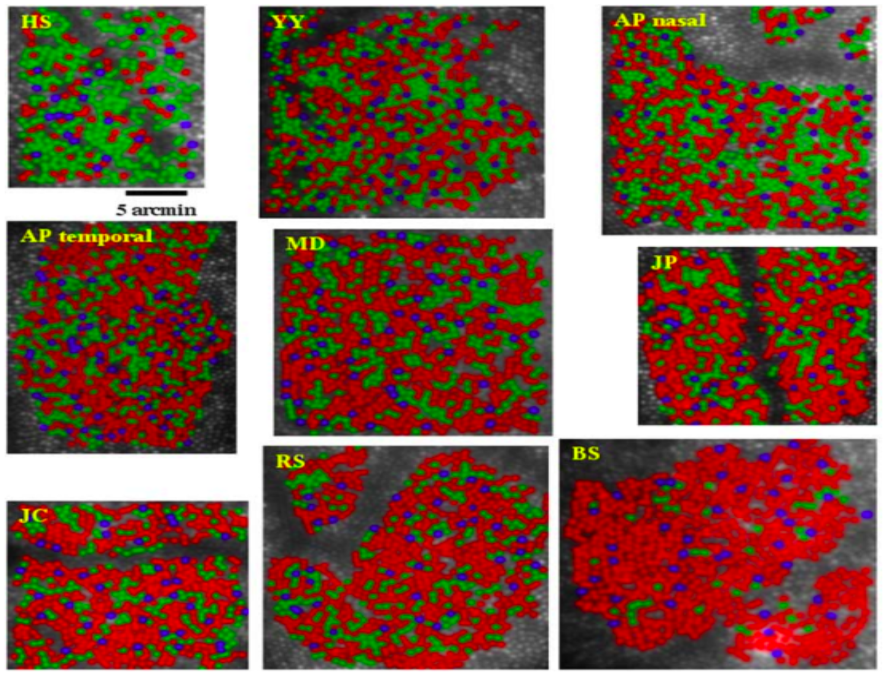
These measurements revealed something that was quite surprising to vision scientists: the ratio of L- to M- cones in the living human eye differs greatly between people. Some of us have equal numbers of L- and M- cones, while others have a large predominance of L-cones. To this point in time, we have not learned how to measure these differences in behavioral experiments, although there have been some attempts. I suspect that an enterprising engineer or scientist will find a means to do so in the future. One of the reasons that the difference is hard to reveal is that the L- and M-cones are so similar to one another.
25.4 Cone mosaic at different eccentricities
The cone spatial sampling density and inner segment aperture size varies a great deal between the fovea and periphery. In the central fovea, the cones are tightly packed and their inner segment aperture diameters are very small (1-2 microns). In the periphery the cones are much more widely spaced and their inner segment apertures are nearly ten times larger (Figure 25.7). Hence, our encoding of the retinal irradiance is very different between the fovea and periphery.
TODO: Incorporate Watson estimates for RGC density, as well.
TODO: There is an ISETBio figure related to s_coneEccentricities.m that we could reference and include as a fise_<> file.
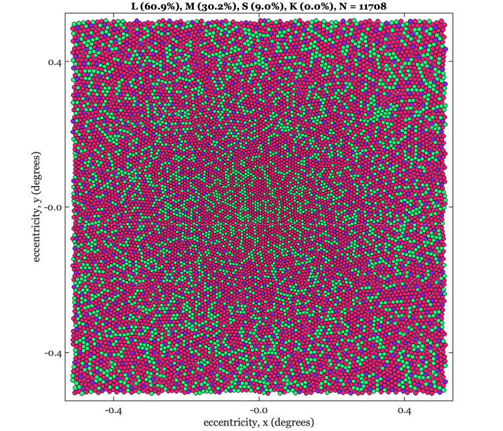
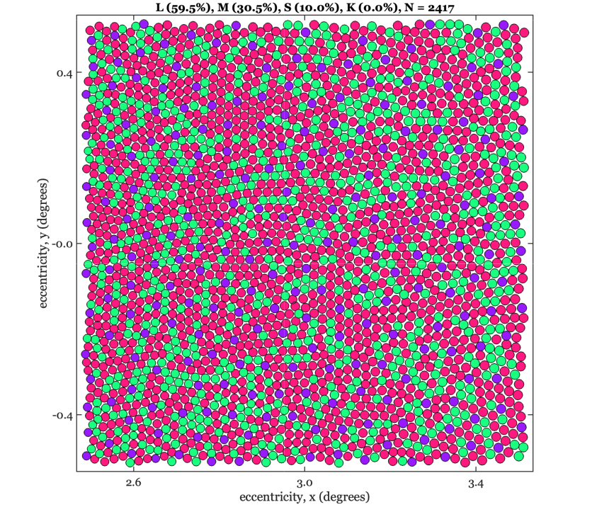
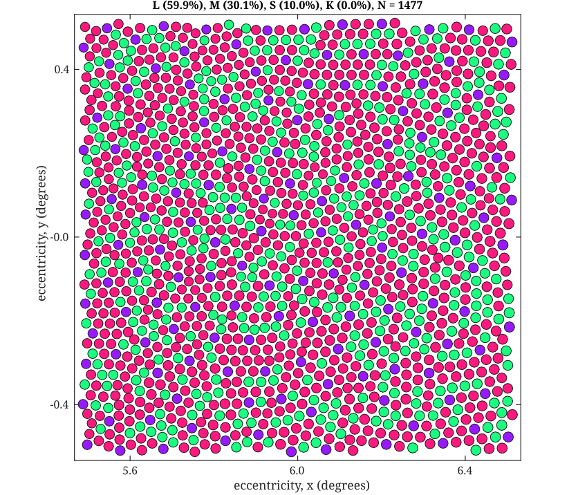
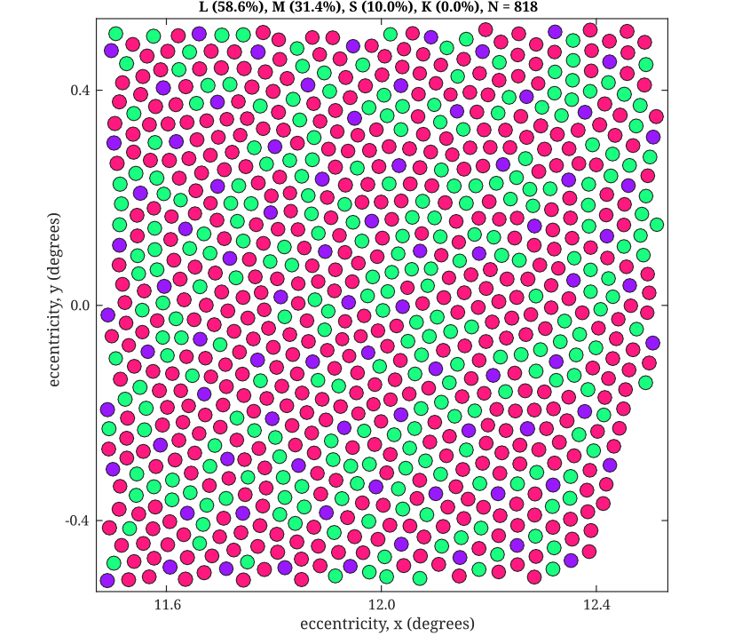
25.5 PSF at the cone inner segments
We are now ready to describe the optical spread with respect to the cone spatial sampling. First, we illustrate for a typical person how the PSF changes with visual field eccentricity. Second, wwe illustrate how the PSF changes with wavelength.
25.5.1 Eccentricity dependence
The set of images in this panel illustrates the PSF on the cone mosaic for locations in the central fovea, 3 deg, 6 deg and 12 deg. The original scene is a set of 9 points (3 x 3), spanning about half a degree. The points are broadband lights. In the fovea, the PSF excites about 3-7 cones. In this region this light causes about 2000 excitations per cone.
In the peripheral locations the cone inner segment apertures are bigger, and the blur is bigger as well. The larger blur matches the increased size of the cone apertures, so once again about 3-7 cones are significantly excited. Further, the cones all absorb about 2000 photons. for this subject, at 12 deg eccentricities, the cone apertures are not quite as well matched. Only 2-4 cones are significantly excited and they each capture about 4000 photons.
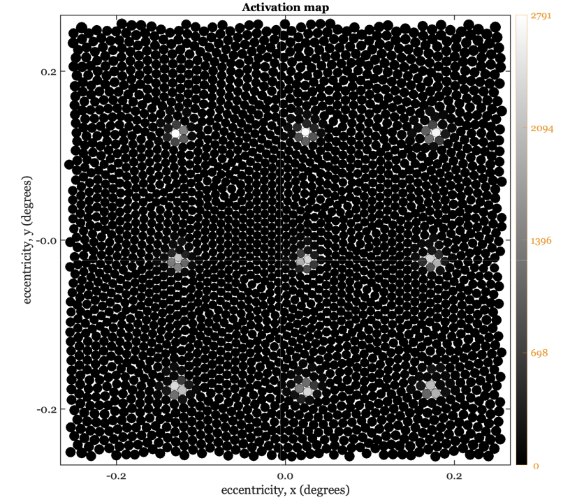
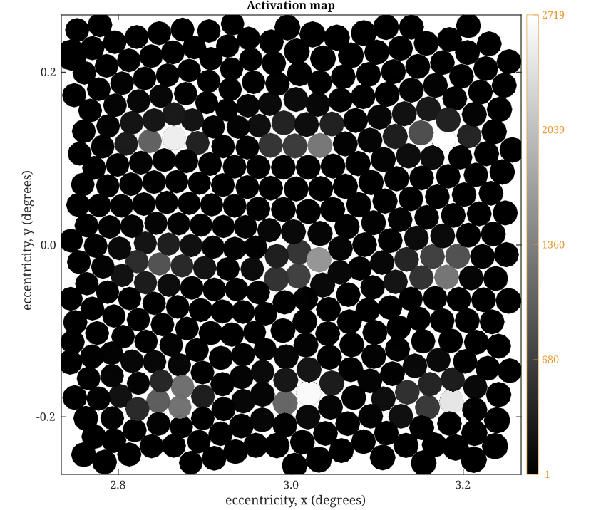
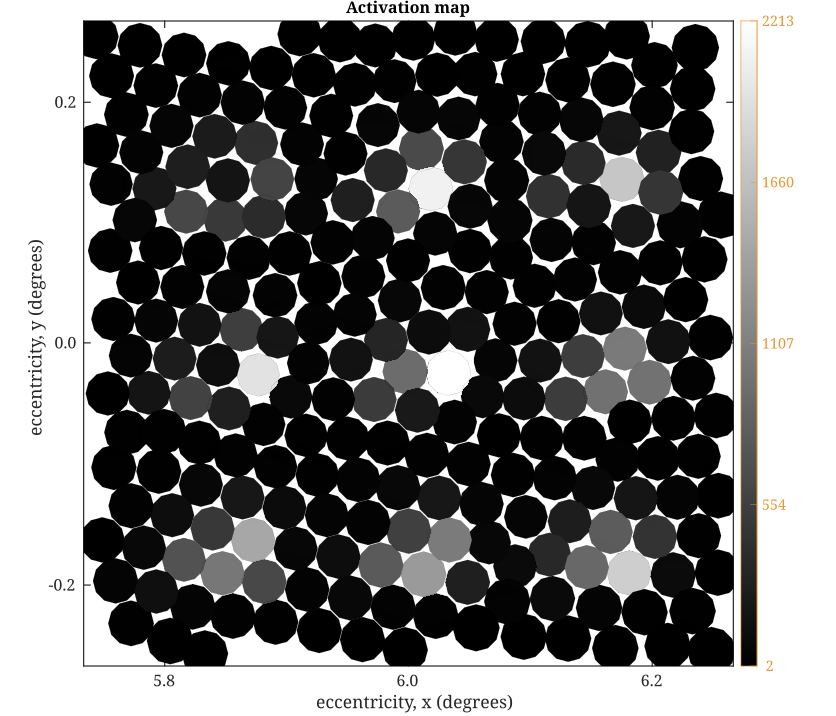
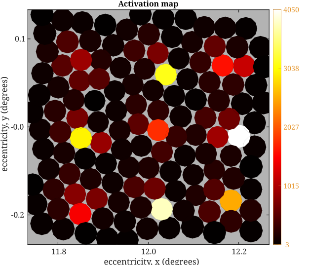
If we measure an input-referred spatial resolution, the eye’s sensitivity is considerably reduced with eccentricity. If we think purely in terms of the number of excited cones, the signal is much closer to constant from fovea to periphery. Perhaps this latter measure is the important one for how the nervous system is wired up. I can speculate a little, right? Though I sure would like a better story.
25.5.2 PSF wavelength dependence
In normal viewing, the human eye’s optics brings the middle wavelengths are in good focus at the inner segment. Because of chromatic aberration, the short wavelength light is focused at the RGC layer, and measured at the inner segment layer the short wavelength light is considerably spread out (Figure 25.9). The defocus of the short wavelength light is wired into the design of the cone sampling density.
We can see this by comparing the spacing of the L- and M-cones with the S-cone (Figure 25.9). That figure shows the sampling density of the L,M cones separately from the much lower sampling density of the S-cones. There are about 3-5 cones within the point spread of the middle wavelength light, and there are also about 3-5 S-cones within the point spread of the short-wavelength light. Nature has evolved a photoreceptor mosaic so that the spatial sampling of each cone type matches the wavelength-dependent optical blur.
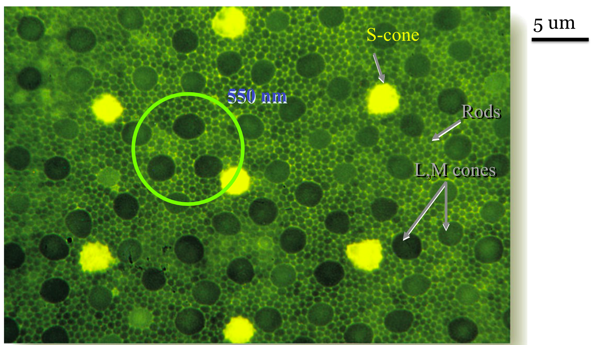
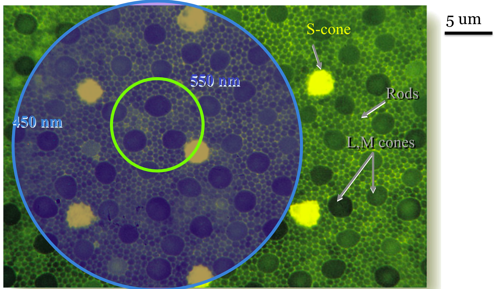
Modern measurements of the eye’s wavefront aberrations enable us to simulate the wavelength-dependent PSF at the cone mosaic effect. Recall that in the very center of the fovea, there are no S-cones. But there are some about 0.2 deg in the periphery. If you click on the images in Figure 25.10, you will see a simulation of the absorptions along with a label of the cone type by the color of the circle around each cone. For the 550 nm light in the left panel, the excitations are spread over only about 3 cones.
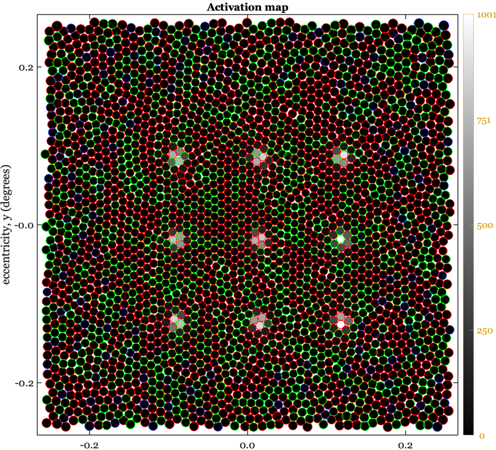
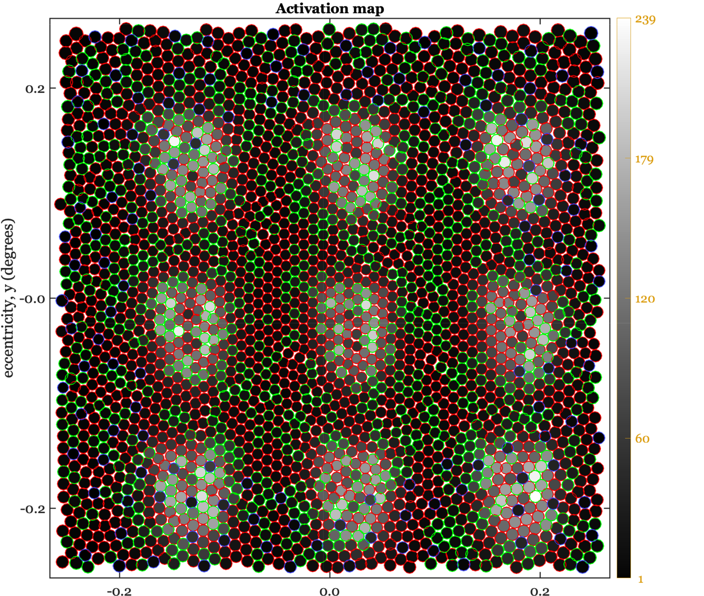
For the 450 nm light in the right panel, the PSF is spread over a larger retinal region. But again, click on the image to see it enlarged in a new tab. The number of S-cones excited by the short-wavelength PSF is still only 3-5, as in Figure 25.9. The number of excitations of all the cones, including the S-cones, is much lower for the short-wavelength light. Recall that the short-wavelength light is absorbed by the cornea, lens, and macular pigment. To equate the number of absorptions, we would need to scale the intensity of the light quite a bit.
25.6 Spatial sensitivity in the transform domain
The usefulness of the analyses in the transform domain, in engineering generally and optics specifically, led vision scientists to ask whether measurements using harmonics could be useful for understanding and characterizing the human visual system. Perhaps the first person to see the potential application was the image systems engineer Otto Schade. This is the person who developed the concept of the modulation transfer function (MTF) for image systems engineering questions (Section 13.4.2).
I created four Google docs with historical information about CSF measurements, how to download the historical data, and how to imlement the modern models of the historical and more modern data. Integrate those pages here and write some Matlab scripts to create figures.
Show the data he collected of the CSF (1/MTF) he measured that I include in FOV. Maybe in the human spatial encoding chapter.
The use of harmonics to probe the visual system is quite different from their use in studying typical systems. At many points in this volume I have pointed out that harmonics are particularly valuable stimuli for space-invariant linear systems Chapter 37. These systems have an input and an output. THe use of harmonic stimuli in human vision faces two significant limitations. First, as we have just seen, the system is not at all space-invariant (Figure 25.7). It is justifiable to use harmonics as special stimuli over small regions of the retina, which can be close to space-invariant. Stimuli that span more than a degree or two will not have the special property (harmonics being nearly eigenfunctions) that make them so useful in systems analysis.
Second, even at the earliest stages of vision the neural encoding is not restricted to a single system.
25.6.1 Contrast sensitivity functions (CSF)
Optical scientists use both the space domain (PSF) and the transform domain (MTF) to study their system, and vision scientists use both domains as well. The nonuniformity of the optical blur, coupled with the nonuniformity of the cone spatial sampling, imply that shift-invariant methods only make sense over patches of the visual field. As a result, the carefully controlled harmonics used in vision experiments are modulated over relatively small regions of space.
There are several ways in which this modulation is accomplished in experiments, though perhaps the most common is to use a Gabor function; named after Denis Gabor, the Nobel Laureate credited with the discovery of the laser.
\[ \begin{aligned} g(x,y) &= \exp\!\left( -\frac{(x - x_0)^2 + (y - y_0)^2}{2\sigma^2} \right) [1 + a \cos\!\big(2\pi f x + \phi\big)] \end{aligned} \tag{25.1}\]
Gabor functions are harmonics modulated by a Gaussian. The standard deviation of the Gaussian (\(\sigma\)) controls the spatial spread; the frequency of the harmonic \(f\), controls the center frequency of the image. The phase term, \(\phi\), controls the spatial relationship between the harmonic and the peak of the Gaussian. The central position in the visual field is \((x_0,y_0)\), and the amplitude of the harmonic is controlled by \(a\).
Figure: Show images of different Gabors.
Show classic contrast sensitivity functions (CSF) measured with Gabor patches shown here.
Note: Should we adjust \(f\) and \(\sigma\) together, or should we fix \(\sigma\) and adjust \(f\) on its own. Thinking about the space-variant part of the human visual system, we realize both are important parameters.
25.6.2 Vernier acuity
Gerald and Suzanne lead the discussion of Vernier acuity.
https://www.fisicanet.com.ar/biografias/cientificos/v/vernier-pierre.php
Something about Vernier calipers and the story of Pierre Vernier.
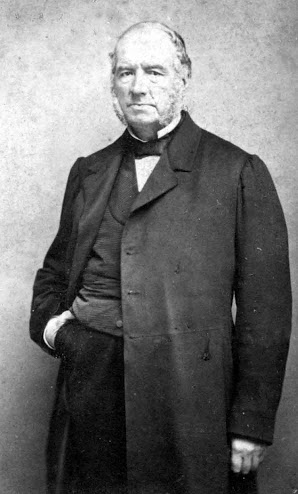
Historical
https://en.wikisource.org/wiki/1911_Encyclop%C3%A6dia_Britannica/Vernier,_Pierre
Differential Interference Contrast microscopy is a technique that enhances the contrast in unstained, transparent specimens. The microscope converts gradients in specimen thickness or refractive index (which naturally occur at the boundaries of structures like cell layers, membranes, and organelles) into differences in light intensity (contrast). It is particularly useful in imaging the layers of a retina, making features visible that would otherwise be nearly invisible in a brightfield microscope.↩︎